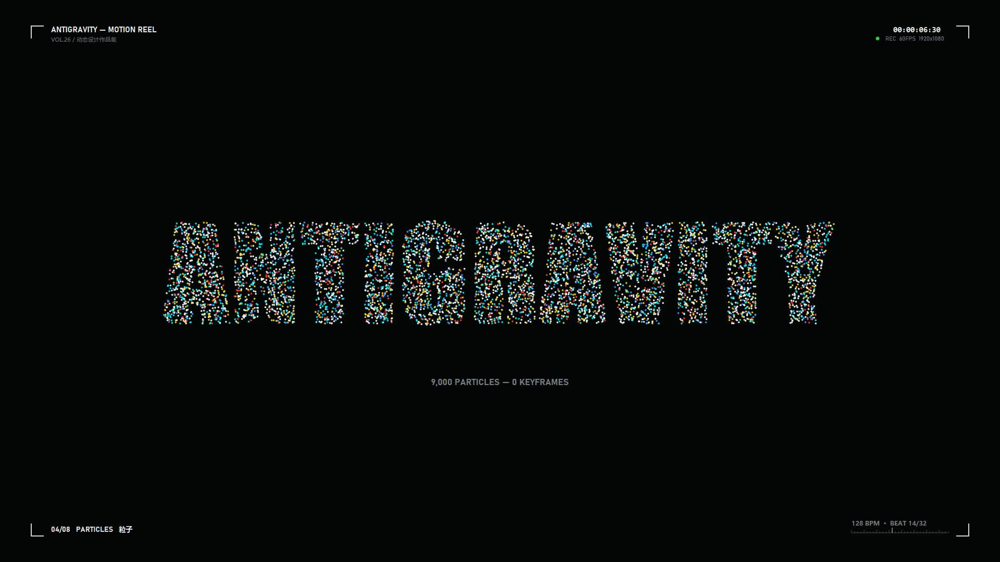

Swiss 算法动态排版引擎
探索经典“瑞士平面设计（Swiss Style）”严谨网格在现代代码中的动态生命。使用纯算法驱动几何矩阵形变、非线性弹性缓动与拓扑重组，摒弃生硬的生搬硬套，让排版具备音乐般的节奏感。
“秩序生于算法，灵动归于呼吸。”
本地 60FPS 实时渲染演示
李减除 / 用代码构建生命力 -÷
用代码构建富有生命力的交互体验。
AI开发工程师，专注于智能体协同 (Agent)、生成式算法动效与高维图形交互。
喜欢把复杂的数学模型与算法推导弄明白，也喜欢把它们写成具有呼吸感、高响应速度的人机交互界面。这里记录我正在推进的工程、技术探索，以及创作思路。
✧ 从一行清晰的数学规则，到鲜活跃动的数字世界
现在进行时 ✦
探索经典“瑞士平面设计（Swiss Style）”严谨网格在现代代码中的动态生命。使用纯算法驱动几何矩阵形变、非线性弹性缓动与拓扑重组，摒弃生硬的生搬硬套，让排版具备音乐般的节奏感。
“秩序生于算法，灵动归于呼吸。”
将程序化合成的音频波形进行实时快速傅里叶变换（FFT），提取多频段音量包络与瞬态冲击，驱动三维空间粒子群。声音不再是附赠的背景，而是直接调制视觉画面的神经元。
从 48kHz WAV 纯数字信号，映射到动态连续流体。
围绕大语言模型构建具备自主思考、工具链协同调用与反思机制的 Multi-Agent Swarm 系统。通过响应式节点图将智能体之间的决策分歧、代码评测与路由状态具象化呈现给用户。
让复杂的后台推理流，化为直观清澈的交互视图。

关于李减除 ✦
我喜欢探寻技术的底层原理，也喜欢动手把抽象的逻辑具象化为生动的界面。
许多人认为算法是冰冷的矩阵乘法、张量计算和终端日志。但在我看来，代码是数字世界里最具生命力的黏土。当把物理动力学、缓动曲线与大模型的主动感知注入其中，屏幕上的每一个元素就拥有了呼吸与温度。
在工程上，我追求“减除”——去掉无意义的花哨与冗余，保留最纯粹、最优雅的结构与最敏捷的交互响应。
现在，我正专注在 AI Agent 智能体应用落地、算法生成式视听系统与现代 Web 端前沿体验。我想看看一个人借助现代 AI 与工程工具，究竟能把交互的边界拓展到什么程度。
李减除 ✦如果你正在构建有意思的 AI 产品、探索前沿的交互形态，或想交流技术与合作，都随时欢迎联系我。
把你的想法或具体需求发给我，我会认真回复每一个真诚的探讨。